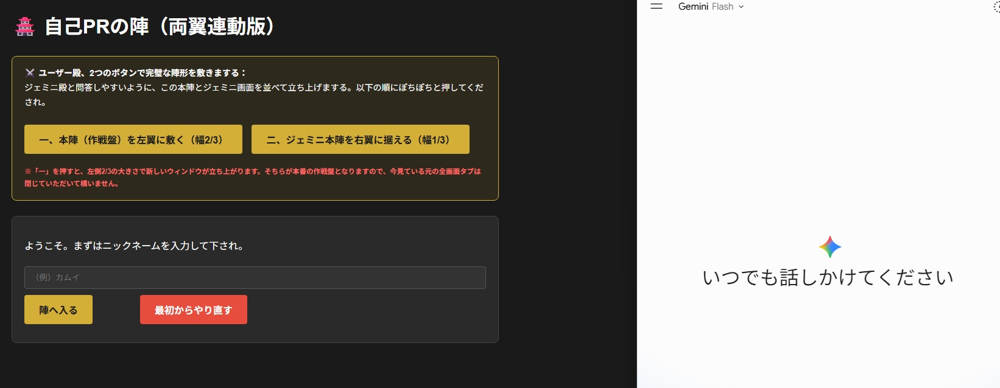
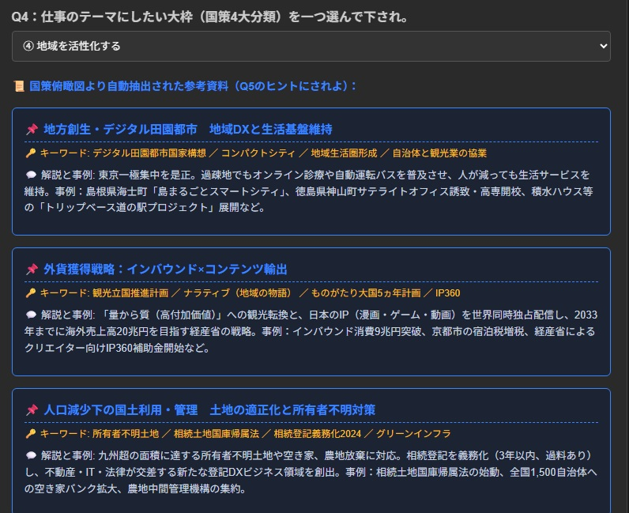
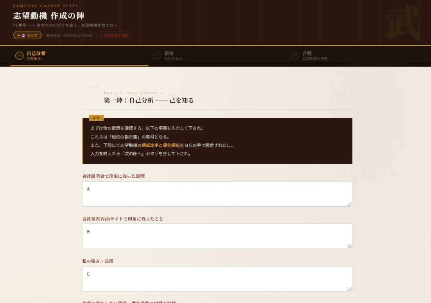
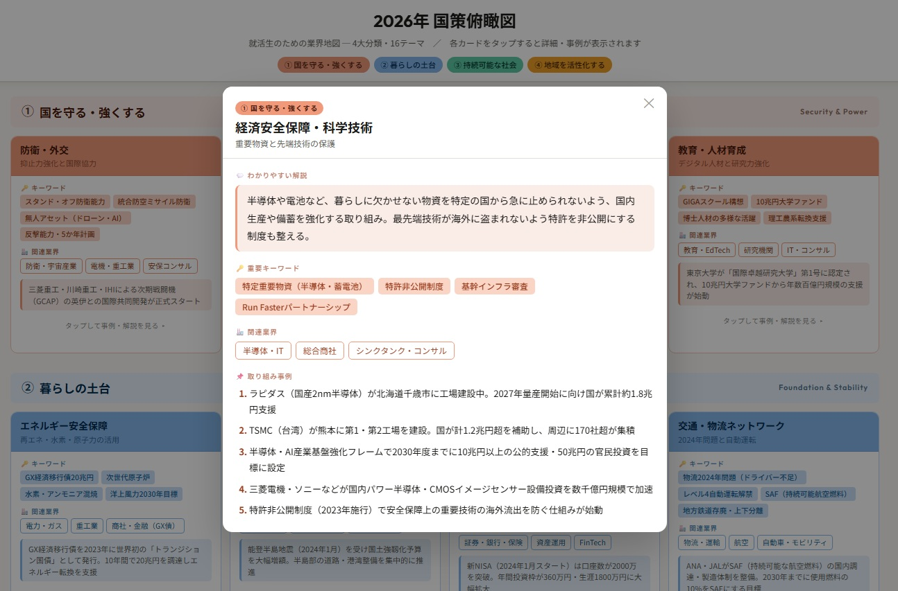

就活本著者 岡茂信 の
AI Career Suite
25年の就活・採用支援と著書に基づく「合格ロジック」をAI化。
気さくなお侍さんAIが軍師となって、君の秘めた才能や志を言語化します。
← クリックまたはスクロールで全冊確認 →
ログイン不要・ニックネームのみで今すぐ参陣可能
画面の大きさが必要なためPCでの使用を前提としています
★★★利用方法はこちら★★★
「Claude・NotebookLM・Gemini」の各AI（無料版）利用に慣れておくとスムーズに使えます。
納得できるものが生成された場合は、ワード等にコピペして保存しておきましょう。
学生時代の経験から、強みと逆境を乗り越える力を抽出。世界の偉人の金言と融合した情熱の自己PRを創り上げます。

君の胸が高鳴るキーワードから10年後の大計を策定。画面に自動で浮き出る「国策大計」の事例をヒントに思考を深めます。

自己分析データ×企業情報をAIで美しく融合。君だけの唯一無二の泥臭くも熱い志望動機を生成します。

政府が推進する4大分類・16テーマの有望国策市場を徹底網羅。己の志と紐付け、面接での説得力を爆発的に高めます。

9分類37職種。実社会にどんな仕事があるのかを網羅。「結果とプロセス」「苦手な人」のタイプなどが一目でわかるデータベース。

SAMURAI CAREER SUITE
天下布武